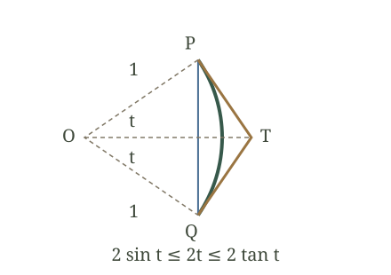

第一节 · 楔子—圆的面积
初入山门，拦路的没有妖魔，只有石板上画着的一个圆。旁边留下一问：半径为 r 的圆，面积是多少？
你大概会不假思索地答：S=\pi r^2。这么熟悉的公式，也配做第一关的难题？正要往前走，石板上却又浮出一行字：“答案不错。可是，为什么？”
先把记住的公式放在一旁。矩形的面积，我们会算；三角形的面积，可以借助拼接来求；遇到一个多边形，也能把它分成若干个三角形，再将面积相加。这些招式，你早已用得熟练。
可眼前偏偏是一个圆。试着在圆里画一个正方形，面积算出来了，四周却空着几块；再换一个边数更多的多边形，空隙小了，仍旧没有消失。你不断加边，图形越来越像圆，可只要边数还是有限的，它就终究不是圆。差得很少，能算作完全相等吗？
也许你还记得，把圆切成许多扇形，再交错拼成一个近似的长方形。可那个“近似”，究竟如何才能成为“准确”？一幅看起来越来越像的图，足以说明面积恰好等于 \pi r^2 吗？
难处终于显出了真身：我们会算有限个直边图形的面积，却还缺少一座桥，把一次次近似带到一个确定的答案。仅凭目前掌握的有限分割与拼接，我们还不能完成这一步。 那座尚未搭起的桥，正是本回要学习的“极限”。
先把这个圆留在山门前。待我们习得新的本领，再回来回答它：如何通过极限，求出圆的准确面积？这便是第一关的大 Boss。
第二节 · 初识对手—多边形面积
要闯过这一关，先得认清对手。圆的面积暂时不会求，但圆里面的多边形，我们会算。于是，先固定一个半径为 r=1 的圆（单位圆），在里面画一个内接正多边形：“内接”是说顶点都在圆上，“正”是说各边相等、各角也相等。
把边数记为 n，这个多边形的面积记为 A_n。这里的下标是一张身份牌：A_3 是正三角形的面积，A_4 是正方形的面积，A_6 是正六边形的面积。圆的大小始终不变，改变的只有边数。


同一个圆，六种边数。绿色部分是多边形，浅色空隙是尚未覆盖的部分。
先看图：边数增加后，多边形的边界似乎越来越贴近圆。但眼睛只能帮助我们发现线索。要追踪这种变化，还得把图形变成可以计算的数。
从一个三角形算起。 连接圆心与每个顶点，内接正 n 边形便被分成 n 个完全相同的等腰三角形。它们的两条腰都是圆的半径 1，顶角合起来是一整周，所以每个顶角为
\theta=\frac{360^\circ}{n}=\frac{2\pi}{n}\quad\text{（弧度）}.

还记得三角形的“底乘高除以二”吗？高 OM 把顶角平分，在一侧的直角三角形中，半条底边为 \sin(\pi/n)，高为 \cos(\pi/n)。因此，这一块的面积是
\frac12\times 2\sin\frac{\pi}{n}\times \cos\frac{\pi}{n} =\frac12\sin\frac{2\pi}{n}.
最后一步用了倍角公式 2\sin t\cos t=\sin(2t)。把这 n 块面积相加，就得到我们需要面对的对手：
\boxed{A_n=\frac{n}{2}\sin\frac{2\pi}{n},\qquad n=3,4,5,\ldots}
第三节 · 再识对手—集合与映射
我们先来看看，这个对手究竟长什么样。让边数依次取 n=3,4,5,6,\ldots，代入公式，就能算出相应的面积。先看前四项（保留六位小数）：
| 边数 n | 面积 A_n |
|---|---|
| 3 | 1.299038 |
| 4 | 2.000000 |
| 5 | 2.377641 |
| 6 | 2.598076 |
把这些面积按边数依次排开，就得到 A_3,A_4,A_5,\ldots。这样一串按次序排列的数，在数学上称为数列。
在这个数列中，n 表示多边形的边数，A_n 表示对应的面积。这是一个具体的实例。为了让研究得到的结论适用于更一般的问题，数学上要做的第一步，就是把研究对象进行抽象。为此，我们先引入集合与映射。
我们把所有允许的边数放在一起，得到集合 D=\{3,4,5,\ldots\}；把面积看作实数，用实数集 \mathbb{R} 容纳它们的取值。集合把选定的对象组织起来，让“研究哪些东西”有了明确的界定。
我们把所要研究的对象统称为元素 (element), 这些元素所组成的总体叫做集合 (set). 一般用大写字母如 A, B, C 表示集合, 用小写字母如 x 或 a, b, c 来表示集合中的元素.
- 如果 x 是集合 A 的元素, 就说 x 属于 集合 A , 记作 x\in A ;
- 如果 x 不是集合 A 中的元素, 就说 x 不属于 集合 A, 记作 x \notin A.
- 不包含任何元素的集合叫做 空集 (emptyset), 记为 \varnothing.
自然数集— \mathbb{N} = \left\{0, 1, 2, 3, \cdots \right\}实数集— \mathbb{R} = \left\{x: -\infty < x < \infty \right\}满足不等式 x-3<10 的所有实数 x— E=\{x\in\mathbb{R}:x<13\}
集合为我们搭建了舞台，接下来要介绍的映射的概念则是这个舞台上的演员。
映射给出一条从输入到输出的规则。我们真正关心的，不只是几个孤立的数，而是这条规则怎样把它们联系起来。回看本回的大 Boss——圆的面积，我们已经把它化成了要追踪的面积规则：
\boxed{A_n=\frac{n}{2}\sin\frac{2\pi}{n},\qquad n=3,4,5,\ldots}
任意给定一个允许的边数 n\in D，都能按照同一条规则算出唯一的面积 A_n\in\mathbb{R}。这条对应规则，才是接下来要研究的对象。 映射把这种想法抽象出来，使它也能用于边数与面积之外的其他对象。
映射 (map) 描述了从一个集合到另一个集合的某种对映关系. 设 A, B 是两个集合, 如果存在一个对映关系 f, 使得集合 A 中的每个元素都唯一的对映到 B 中的一个元素, 则称 f 为从 A 到 B 的映射, 记作 f: A \rightarrow B
映射 f 把集合 A 中的元素 a 对映到 B 中的元素 b, 可记作 f(a) = b 此时 b 称为 a 的象, a 称为 b 的原象.
映射可以通过下面的图像来理解:

图中箭头表示了集合 A 中元素与集合 B 中元素的对映关系.
根据定义, 映射需要满足两个要求: 随处取值, 唯一对映.
- 随处取值是指 A 中的任何一个元素在 B 中都有对映.
- 唯一对映是指 f 可以把 A 中的不同元素映射到 B 中的同一个元素, 但不能把 A 中的一个元素映射到 B 中的多个元素.
取人物集合 P=\{\text{李白},\text{杜甫},\text{苏轼}\}，把其中每个人对应到他的字：李白 \mapsto 太白，杜甫 \mapsto 子美，苏轼 \mapsto 子瞻。在这个选定的范围内，每个人都有一个确定的输出，因此这是一种映射。输入和输出都不是数，映射照样成立。
把李清照的两首词《如梦令·常记溪亭日暮》和《如梦令·昨夜雨疏风骤》分别对应到它们的词牌名，输出都是“如梦令”。不同的输入可以有相同的输出，这仍然是映射。
反过来，若规定“给一个词牌名，找出所有使用它的作品”，并把每一首作品分别作为输出，那么“如梦令”会对应多首词，不能唯一确定一首作品，因而不是从词牌集合到作品集合的映射。若另行约定输出是“这些作品组成的集合”，那便换了输出对象，可以构成另一种映射。
仍取 P=\{\text{李白},\text{杜甫},\text{苏轼}\}，却把输出集合限定为 Q=\{\text{太白},\text{子瞻}\}。若规则仍是“对应到自己的字”，杜甫就找不到属于 Q 的输出。这条规则不构成从 P 到 Q 的映射：定义域里的每个元素都必须被照顾到。
第四节 · 三识对手—数列与函数
映射的天地很广：人名、字、词牌、作品，都可以成为它的研究对象。现在，我们把目光收回来：许多映射只和数有关，而数可以比较大小、进行运算，还能标在坐标轴上。对接下来的研究而言，还有什么比数更方便处理呢！于是，我们把输入和输出的集合都限制为数集，就得到了函数。
在本课程中，从一个数集到另一个数集的映射，称为函数。通常写作 y=f(x)：x 是自变量，允许输入的数构成定义域；f(x) 是输入 x 后得到的唯一函数值。
函数仍然遵守映射的要求：每个允许的输入，都有且只有一个输出。
数列是一类特殊的函数：它按整数下标依次取值，通常记作 a_1,a_2,a_3,\ldots。我们的面积数列以边数为下标，从 3 开始：
A:D\longrightarrow\mathbb{R},\qquad A_n=\frac n2\sin\frac{2\pi}{n},\qquad D=\{3,4,5,\ldots\}.
每给定一个允许的边数，就得到唯一的面积。因此，这个数列也是一个函数，只是它的输入只能取 3,4,5,\ldots，不能取 3.5。下面再看两个自变量可以取任意实数的函数。
取 f(x)=2x+1，定义域为 \mathbb{R}。输入 x=-1,0,1,2，输出依次为 -1,1,3,5。自变量每增加 1，函数值就增加 2。把所有点 (x,2x+1) 画在平面上，会得到一条直线。
取 g(x)=x^2，定义域也为 \mathbb{R}。输入 x=-2,-1,0,1,2，输出依次为 4,1,0,1,4。不同输入可以给出相同输出，例如 g(-2)=g(2)=4，但每个输入仍只对应一个值。它的图像是一条抛物线。
第五节 · 火眼金睛—函数图像
认清了函数的规则，还要看清它变化的模样。只盯着公式，有时很难看出端倪；把输入与输出画成坐标平面上的点，变化便有了形状。函数图像，就是让函数无所遁形的法宝，也是我们的火眼金睛。
函数 y=f(x) 的图像，就是定义域中所有 x 所对应的点 (x,f(x)) 组成的集合。横坐标放输入，纵坐标放输出，一个点记录一组对应关系。公式把规则写出来，图像则把规则画出来。
先把上一节的两个函数画出来：一次函数显出一条直线，二次函数显出一条抛物线。

学会了这件法宝，就要经常用它。以后遇到一个函数或数列，不妨先问：它的图像是什么模样？ 它往上走还是往下走，变化快还是慢，有没有逐渐靠近某个高度？每个实变量实值函数都有自己的图像，数列也不例外；实际作图时，我们选取合适的范围和代表性的点来观察，而不必把无穷多个点逐一画完。
现在，就让圆面积的对手显形。面积数列的图像由 (3,A_3),(4,A_4),(5,A_5),\ldots 这些离散的点组成。点与点之间不能随意添值或连成连续曲线：多边形没有 3.5 条边。
让边数继续增大，把数列看得更远一些。下表列出更多的面积值，均保留六位小数。
| 边数 n | 面积 A_n |
|---|---|
| 3 | 1.299038 |
| 4 | 2.000000 |
| 5 | 2.377641 |
| 6 | 2.598076 |
| 8 | 2.828427 |
| 12 | 3.000000 |
| 24 | 3.105829 |
| 48 | 3.132629 |
| 96 | 3.139350 |
| 192 | 3.141032 |
| 1000 | 3.141572 |

- 表中的面积怎样变化？变化的幅度是否相同？选取 n=12,24,48,96，比较每次边数翻倍后面积增加了多少。
- 后几行的数字让你想到了哪个熟悉的数？你猜测，当边数继续增加时，面积会趋向哪里？先写下猜想和理由。
- 如果两个面积在保留六位小数后完全相同，能否断定它们真正相等？图形看不出空隙，是否就意味着空隙已经消失？
- 这十一行数据，足以说明所有更大的边数都遵循同样的规律吗？要把观察变成结论，我们还缺少什么？
不妨先与同伴交换看法，再继续往下读。表格能给出线索，却不能代替对所有情形的论证。 圆的准确面积，仍是等待我们攻克的问题。
这条面积规则看起来还有些复杂。先把它改写为
A_n=\pi\frac{\sin(2\pi/n)}{2\pi/n}.
外面的 \pi 只是固定的倍数。把面积除以 \pi，再把里面反复出现的 2\pi/n 记作 x，就露出了一个更简单的函数：
f(x)=\frac{\sin x}{x},\qquad x\ne0.
这不是把 \pi 随意删掉，而是换了一把纵轴的尺子，并重新标记输入。记 x_n=2\pi/n，二者的准确关系是
\boxed{\frac{A_n}{\pi}=f(x_n),\qquad x_n=\frac{2\pi}{n}.}

例如 n=6 时，左图取第 6 项的高度 A_6/\pi；右图则在 x_6=\pi/3 处取值，得到完全相同的高度 f(\pi/3)。每一个允许的 n，都在右边的曲线上选出一个点；右边还有许多点，并不对应整数边数。
- 沿左图让 n 越来越大，同色点在右图中向哪个方向移动？请用 x_n=2\pi/n 解释。
- 这些点的高度似乎越来越接近多少？若 A_n/\pi 趋近 1，原来的面积 A_n 应趋近多少？
- 右图在 (0,1) 处画了空心点。为什么不能直接把 x=0 代入 \sin x/x？“附近的值趋向哪里”和“这一点有没有值”，是同一个问题吗？
我们终于看清：边数不断增大，对应角度不断缩小；面积数列的趋向，藏在函数 \sin x/x 靠近 0 时的模样里。 对圆面积来说，只需从正数一侧靠近 0；函数本身在负数处也有定义，图中一并画出，供我们比较。
观察这些点与曲线，我们有了一种“趋近于”的感觉：边数越大，面积似乎越靠近一个确定的数；x 越靠近 0，\sin x/x 的值似乎越靠近 1。但我们目前还缺少准确描述无限趋近的工具。图像让我们看见了方向，怎样把这种感觉说清楚，还要继续探寻。
第六节 · 无穷之惑—希尔伯特的酒店
刚才，我们让边数不断增加，追问面积会趋向哪里。“继续下去”说起来轻巧，却把我们带到了一个新世界：无限。在那里，一些在有限情形下屡试不爽的直觉，未必还能直接照搬。
想象一家酒店，房间按 1,2,3,\ldots 编号，有无穷多个房间，而且每间都住着客人。此时又来了一位客人。店已住满，还能安排他住下吗？
对只有有限间客房的酒店，答案很明确。但这家酒店的经理让原来住在第 n 间的客人搬到第 n+1 间。这样，每位原有的客人都有新房间，没有两人挤在同一间，第 1 间却空了出来。
关键在于：这里没有“最后一间”。有限酒店这样搬，总会把最后一位客人挤出去；而对每一个正整数 n，编号 n+1 的房间都存在。先看视频，再想想，你原先认定的哪一步，在这里发生了变化？
还是这家住满客人的无限酒店。若有无穷多位客人退房，还会剩下多少位？分别想一想：
- 所有房间的客人都退房。
- 除了第 1 间，其余房间的客人都退房。
- 所有偶数号房间的客人退房，奇数号房间的客人留下。
三种情形中，原来都有无穷多位客人，离开的也都有无穷多位。留下的人数一样吗？能不能把它们都写成“无穷减无穷”，再像普通的数那样相减，得到零？ 先与同伴讨论，说说你的理由。
带着这些疑问，我们继续往前：当有限的直觉不再够用，怎样才能准确描述“无限接近”？
第七节 · 极限的数学定义
敌人藏在“无穷”之中，而我们手里的招式，却是在有限的世界里练成的。能不能用有限的方法，解决无穷的问题？ 从十七世纪微积分的建立，到十九世纪极限语言逐步严格化，数学家们为此经历了一个多世纪的探索。
不妨把他们找到的办法，想象成师傅与徒弟的一场较量。两人先盯住一个候选的数 L：数列真的会无限趋近于它吗？师傅负责出题：“我要误差小于百分之一。”徒弟负责应答：“从这一项往后，每一项都能做到。”师傅又把要求收紧到万分之一、百万分之一，徒弟便给出相应的新起点。
师傅手里的题，叫作 \varepsilon，是一个任意给定的正数；徒弟交出的答案，叫作 N，是一个有限的正整数。徒弟不能只挑出几项交差，而要说明：所有 n>N 的项，都满足 |a_n-L|<\varepsilon。 出题、找起点、比较大小，用的仍是有限数的运算与不等式。
真正的本领，不是接住刚才那几道题，而是有一套应答办法：无论师傅把正的误差要求定得多小，徒弟总能找到一个起点，并保证其后的所有项都过关。 这场较量不需要真的进行无穷多轮；能证明每一道可能的题都有答案，就把“无限趋近于 L”说清楚了。这便是数列极限的定义。
设 \{a_n\} 是一个实数数列，L 是实数。如果对任意 \varepsilon>0，都能找到正整数 N，使所有满足 n>N 的项都有
|a_n-L|<\varepsilon,
就称数列的极限为 L，记为 \displaystyle\lim_{n\to\infty}a_n=L。
证明 \displaystyle\lim_{n\to\infty}\frac1n=0。给定任何 \varepsilon>0，只需选正整数 N>1/\varepsilon。当 n>N 时，便有 |1/n-0|=1/n<\varepsilon。
例如要求误差小于 0.01，取 N=100 即可；要求小于 0.0001，取 N=10000 即可。取法不唯一，能保证后续所有项满足要求就行。
证明 \displaystyle\lim_{n\to\infty}\frac1{n^2}=0。师傅给出任意误差 \varepsilon>0，徒弟先倒着想：要让 1/n^2<\varepsilon，只要 n>1/\sqrt{\varepsilon}。于是，选一个正整数 N\ge 1/\sqrt{\varepsilon}。对所有 n>N，都有
\left|\frac1{n^2}-0\right|=\frac1{n^2}<\varepsilon.
无论师傅怎样出题，这个办法都能给出合适的起点，因此极限就是 0。例如，要求误差小于 0.01，取 N=10 即可；要求小于 0.0001，取 N=100 即可。与前面的 1/n 相比，同样的误差要求，这次可以更早满足。
设函数 f 在 x_0 附近、除 x_0 本身外有定义。如果对任意 \varepsilon>0，都存在 \delta>0，使得
0<|x-x_0|<\delta \quad\Longrightarrow\quad |f(x)-L|<\varepsilon,
就称 f(x) 在 x\to x_0 时的极限为 L，记作 \displaystyle\lim_{x\to x_0}f(x)=L。
\delta 控制输入离 x_0 多近，\varepsilon 控制输出离 L 多近。条件中的 0< 表示我们研究的是靠近这个点的过程，不要求函数在这个点有定义。
第八节 · 极限的计算
定义让我们说清了什么叫“趋近”，但每遇到一个新式子，都重新与师傅较量一番，未免费力。能不能借助已经知道的极限，算出更多极限？四则运算，就是把简单结果组合起来的基本招式。
若两个数列分别趋向有限数 L,M，即 a_n\to L、b_n\to M，则
\begin{aligned} \lim_{n\to\infty}(a_n+b_n)&=L+M,\\ \lim_{n\to\infty}(a_n-b_n)&=L-M,\\ \lim_{n\to\infty}(a_nb_n)&=LM,\\ \lim_{n\to\infty}\frac{a_n}{b_n}&=\frac LM\qquad(M\ne0). \end{aligned}
最后一条要求分母的极限不为零，此时分母从某一项起也不为零。常数 c 的极限就是 c，所以还可得到 \lim_{n\to\infty}(ca_n)=cL。
函数极限也遵守同样的法则。 当 x\to x_0 时，若 f(x)\to L、g(x)\to M，则和、差、积分别趋向 L+M,L-M,LM；当 M\ne0 时，商趋向 L/M。各个极限必须对应同一个趋近过程。这些法则都可以从极限定义推出。
已知 1/n\to0、1/n^2\to0，便可以逐项计算：
\lim_{n\to\infty}\left(3-\frac2n+\frac1{n^2}\right) =3-2\times0+0=3.
再把两个式子相乘：
\lim_{n\to\infty}\left(2+\frac1n\right)\left(3-\frac1n\right) =(2+0)(3-0)=6.
不必先展开乘积，只要两部分的极限都已知，就可以直接使用乘法法则。
求 \displaystyle\lim_{n\to\infty}\frac{2n+1}{n+3}。分子、分母都不断增大，不能把它们当作两个有限极限直接相除。先将分子、分母同除以 n：
\lim_{n\to\infty}\frac{2n+1}{n+3} =\lim_{n\to\infty}\frac{2+1/n}{1+3/n} =\frac{2+0}{1+0}=2.
整理后，分母趋向 1\ne0，商法则才用得上。
当 x\to2 时，x\to2，于是
\lim_{x\to2}\frac{x^2+1}{x+1} =\frac{2^2+1}{2+1}=\frac53.
这里依次用了乘法、加法和除法法则。看起来只是“代入”，背后却有条件：分子、分母的极限都存在，而且分母的极限 3 不为零。
分母的极限为零，不能直接使用商法则。 例如，当 x\to0 时，下面两式的分子、分母都趋向零，但在 x\ne0 时，
\frac{x}{x}=1,\qquad \frac{x^2}{x}=x.
它们的极限分别是 1 和 0。所以，“分子、分母都趋于零”还不能告诉我们商趋向什么，更不能把 0/0 当成答案。遇到这种情形，要先化简，或寻找其他方法。
第九节 · 两边夹定理
定义告诉我们什么叫趋近，却没有自动告诉我们怎样算。直接控制一个复杂表达式的误差，可能很费力。如果能找到两个容易研究的量，把它夹在中间，会怎样？
圆的面积正好提供了线索：内接多边形从里面逼近，我们还可以画一个外接正多边形，让每条边都与圆相切，从外面围住它。如果内外两边最终到达同一个数，中间的圆面积就无处可去。这便是两边夹的思想。

若从某一项开始有 l_n\le a_n\le u_n，且
\lim_{n\to\infty}l_n=\lim_{n\to\infty}u_n=L,
则 \displaystyle\lim_{n\to\infty}a_n=L。它也叫夹逼定理。
对函数同样成立：若在 x_0 附近（可除去 x_0）有 l(x)\le f(x)\le u(x)，且两侧函数在 x\to x_0 时都趋向 L，则中间的函数也趋向 L。
理由很直接：给定任意误差，两侧最终都进入 (L-\varepsilon,L+\varepsilon)，夹在中间的量也只能留在其中。两边必须趋向同一个数。
因为 -1\le(-1)^n\le1，所以
-\frac1n\le\frac{(-1)^n}{n}\le\frac1n.
两边都趋向零，中间也趋向零。中间的数列虽然左右摆动，仍然可以有极限；每次摆动的范围正在缩小。
要计算多边形面积的极限，我们需要 \displaystyle\lim_{x\to0}\sin x/x。先用纯粹的长度比较建立不等式，不借用圆或扇形的面积公式。
在单位圆上取夹角为 2t 的两个半径，0<t<\pi/2。对应的弦长是 2\sin t，圆弧长按弧度定义是 2t，两个端点处的切线相交，外侧两段切线的总长是 2\tan t。弦最短，圆弧不超过外侧切线折线，因此
2\sin t\le2t\le2\tan t, \qquad\text{即}\qquad \sin t\le t\le\tan t.

把圆弧用依次连接的短弦近似。每条短弦与竖直方向的夹角不超过 t，所以它的竖直投影长度至少是自身长度的 \cos t 倍。所有竖直投影相加恰好是 PQ=2\sin t，因此每条这样的内接折线总长都不超过 2\sin t/\cos t=2\tan t。圆弧长是这些折线长度的上确界，也就不超过这个上界。另一方面，直线段是两点之间最短的路径，故弦长不超过弧长。这一论证只涉及长度。
将上面的不等式整理，得到
\cos t\le\frac{\sin t}{t}\le1.
左边为什么趋向 1？由 |\sin u|\le|u| 和半角恒等式，
0\le1-\cos t=2\sin^2(t/2)\le t^2/2\longrightarrow0.
所以两边都趋向 1，两边夹定理给出右侧趋近时的结论。又因为 \sin(-t)/(-t)=\sin t/t，从左侧趋近也一样。因此
\boxed{\lim_{x\to0}\frac{\sin x}{x}=1}.
这里的 x 必须用弧度表示。这个结论说的是极限，不是说 \sin x 与 x 在非零时完全相等。
虽然 \sin x/x 在 x=0 处没有定义，但它在 x\to0 时的极限仍然存在：极限关心的是附近的变化，而不是点上的取值。
第十节 · Boss 战 · 圆面积
回到山门前，这次考虑一般的半径 r>0；单位圆中的各个面积相应乘以 r^2。现在，我们不只会说出 \pi r^2，也已经备好了说明它为什么成立的工具。
从里面逼近。 内接正 n 边形的面积已经算过：
A_n=\frac{nr^2}{2}\sin\frac{2\pi}{n} =\pi r^2\frac{\sin(2\pi/n)}{2\pi/n}.
当 n\to\infty 时，2\pi/n\to0。代入刚刚得到的重要极限，便有
\lim_{n\to\infty}A_n=\pi r^2.
从外面包围。 画圆的外接正 n 边形，面积记为 B_n。连接圆心与顶点，并作圆心到边的垂线。一块三角形的高是 r，半条底边是 r\tan(\pi/n)，所以
B_n=n\cdot\frac12\cdot2r\tan\frac\pi n\cdot r =nr^2\tan\frac\pi n =\pi r^2\frac{\sin(\pi/n)}{\pi/n}\frac1{\cos(\pi/n)}.
正弦比值趋向 1，余弦趋向 1，由极限的乘除法则，
\lim_{n\to\infty}B_n=\pi r^2.
记圆的面积为 S。内接多边形在圆内，圆又在外接多边形内，因此对每个 n\ge3，都有
A_n\le S\le B_n.
两侧都趋向 \pi r^2，把中间的固定数 S 看成常数数列，两边夹定理便给出
\boxed{S=\pi r^2}.
若从面积的构造出发看，内外多边形面积之差也趋于零，因此它们确定了同一个面积值。这说明这里没有把“看起来贴合”当作证明。
任意一个有限边数的内接多边形，都不曾变成圆。我们也没有假设有一个可以直接拿来计算的“无穷多边形”。我们做的是：用两个可计算的数列，控制一个暂时不会直接计算的量，再通过极限确定它。
从图形到数列，从直观到定义，再到两侧合围，这就是这一关真正练成的本领。
- 为什么只算出内接面积趋向 \pi r^2，还需要补上它与圆面积的关系？外接多边形帮助我们排除了什么可能？
- 若只知道 A_n\le S\le B_n，但两侧趋向不同的数，能否确定 S？
- 半径变成原来的两倍时，A_n、B_n 和圆面积分别怎样变化？请从公式与图形两方面说明。
第十一节 · 伯努利的贪婪
隐藏关卡
圆面积的大 Boss 刚刚倒下，山路旁又亮起一盏灯。灯下不是几何图形，而是一本账簿。让我们借伯努利的复利问题，讲一段“还想多得一点”的故事。
你存入 1 元，与掌柜约定：为方便计算，名义年利率取 100\%。一年结一次利息，年末便拿到 2 元。你正要收起账簿，却想到：如果利息早点到账，也能继续生利息，岂不是还能多拿一些？
掌柜答应半年结一次，但全年约定的名义利率不变，所以每半年的利率是 50\%。半年后，本息变为 1\times(1+1/2)；再过半年，连同刚到账的利息一起计息，年末得到 (1+1/2)^2=2.25 元。
一年结四次呢？每次的利率是 1/4，连续乘四个 1+1/4，便得到 (1+1/4)^4。次数越多，每次给的利率也越小；我们没有把每一次的利率都保持为 100\%。
一年等分为 n 个计息期，每期利率为 1/n，利息立即加入本金，且期间不存取资金。每结一次利息，本息就乘以 1+1/n。因此，一年后的本息为
a_n=\left(1+\frac1n\right)^n,\qquad n=1,2,3,\ldots.
n 表示同一年内的结息次数，不是经过了多少年。我们比较的是期限相同、名义年利率相同，只改变结息频率的一组方案。
| 每年结息次数 n | 一年后的本息 a_n |
|---|---|
| 1 | 2.000000 |
| 2 | 2.250000 |
| 4 | 2.441406 |
| 12 | 2.613035 |
| 52 | 2.692597 |
| 365 | 2.714567 |
| 1000 | 2.716924 |
| 10000 | 2.718146 |
表中保留六位小数。这次没有圆的面积公式可以提示答案，我们只能先观察：本息似乎不断增加，增加的幅度却在缩小。
- 从一年结一次改为两次，本息增加多少？从 1000 次改为 10000 次呢？
- 如果继续提高频率，本息会超过 3 元吗？会无限增长吗？先提出猜想，再说明表格还不能证明什么。
- 1+1/n 趋向 1，为什么不能立刻断定 a_n 趋向 1？注意：这里的指数也在变化。
底数越来越小，乘的次数却越来越多，谁会占上风？ 这就是隐藏 Boss。要攻克它，我们先找两条线索：本息是否一直增加，是否始终越不过某条界限。
第十二节 · 单调有界定理
想象沿着数轴向右走，每一步都不后退，而且前方有一道永远不能越过的界限。我们未必预先知道终点是多少，却可以证明：这些位置一定趋向某个确定的数。这是另一种得到极限的方法——先证明终点存在，再研究终点是谁。
若每一步都有 a_{n+1}\ge a_n，称数列单调不减；若始终严格大于，则称严格递增。若存在一个固定的实数 M，使所有项都满足 a_n\le M，称数列有上界。
单调不减且有上界的实数数列，必有有限极限。 同样，单调不增且有下界的实数数列，也必有有限极限。这就是单调有界定理。
有界不等于知道准确极限。一个上界可以留有余地：为了证明数列有极限，我们可以先找一道容易验证的“围墙”。
实数的完备性保证：一个非空且有上界的实数集合，有最小的上界，称为上确界。设 L 是所有数列项的上确界。任取 \varepsilon>0，L-\varepsilon 都不可能还是上界，所以有某一项 a_N>L-\varepsilon。由于数列单调不减，之后的每项都满足 L-\varepsilon<a_n\le L，于是 |a_n-L|<\varepsilon。这正是极限的定义。这里“没有空隙”的实数系统是关键。
数列 n 单调增加，却没有上界，因而没有有限极限；数列 (-1)^n 有界，却不单调，也不收敛。
1-1/n 则单调不减，并以 1 为上界，所以有极限；进一步计算才知道极限就是 1。请注意：定理给出的是保证收敛的一组条件，不是说所有收敛数列都必须单调。
回到复利数列。现在任务明确了：证明它向上走，再找一个共同的上界。 两件事都完成，就能确认隐藏 Boss 的极限确实存在。
第十三节 · Boss 战 · 数 e
先看清结构。 直接比较两个幂不太方便。借助二项式定理，把 a_n=(1+1/n)^n 展开。记 k!=1\cdot2\cdots k，并约定 0!=1，则
a_n=\sum_{k=0}^{n}\binom nk\frac1{n^k} =2+\sum_{k=2}^{n}\frac1{k!} \left(1-\frac1n\right)\left(1-\frac2n\right)\cdots \left(1-\frac{k-1}{n}\right).
求和符号 \sum 只是“把这些项加起来”的简写。例如 n=3 时，展开式为 1+1+1/3+1/27。当 n=1 时，上式后面的求和没有项，值为零。
比较 a_n 与 a_{n+1} 的展开式。对每一个原有的 k\ge2，因子 1-j/n 在 n 增大后都会增大，且它们都是正数；展开式还多出一个正项。前面的两项仍然是 1+1。因此
a_{n+1}>a_n.
对最初一步也有 a_2=2.25>a_1=2。所以复利数列严格递增。
展开式中每个括号都不超过 1，故
a_n\le2+\sum_{k=2}^{n}\frac1{k!}.
当 k\ge2 时，k!\ge2^{k-1}，因而
a_n\le2+\sum_{k=2}^{n}\frac1{2^{k-1}}<3.
最后的和是 1/2+1/4+\cdots 的有限部分，不到 1。于是，无论结息多少次，本息都小于 3 元。
复利数列单调递增且有上界，按单调有界定理，它必有一个有限极限。我们把这个数记作 e：
\boxed{e=\lim_{n\to\infty}\left(1+\frac1n\right)^n} \qquad e\approx2.718281828459\ldots.
这不是把 n=\infty 代入公式，也不是凭表格猜出一个数。我们已经证明了极限存在，再为它命名。提高计息频率可以增加收益，却不能让收益无限增长。
证明极限存在，并没有自动证明它无理；有限位小数也不能说明一个数是否无理。要确认 e 不能写成两个整数之比，还需要下面的论证。第一次阅读可以先掌握上面的单调、有界两步，再展开这一段。
先把 e 与一个便于控制误差的和联系起来。令 s_m=\sum_{k=0}^{m}1/k!。它单调增加且有上界 3，所以存在极限 E。
由前面的展开式，a_n\le s_n，所以 e\le E。反过来，固定任意 m，只保留 a_n 展开式的前 m+1 项（n\ge m）；当 n\to\infty 时，有限多个括号都趋向 1，因此 e\ge s_m。再令 m\to\infty，得到 e\ge E。所以
e=E=\sum_{k=0}^{\infty}\frac1{k!}.
这里的无穷和指部分和的极限。我们先固定有限的 m，再取极限，没有直接把极限搬进一个不断增加项数的和里。
假设 e=p/q，其中 p,q 为正整数。取整数 m\ge\max\{q,2\}。因为 q 整除 m!，m!e 是整数；而 m!s_m 也是整数。因此
R=m!(e-s_m)
应是一个整数。但用上面的无穷和表示，
0<R=\sum_{j=1}^{\infty}\frac1{(m+1)(m+2)\cdots(m+j)} \le\sum_{j=1}^{\infty}\frac1{(m+1)^j} =\frac1m<1.
一个整数不可能严格介于 0 与 1 之间，矛盾。因此 e 是无理数。
圆面积一战，我们从两侧夹住目标；复利这一战，我们先凭单调与有界确认终点存在，再研究这个终点的性质。有时先知道答案再证明，有时先证明有答案，才逐步认出它。 两条路，都是以有限的推理掌握无限的变化。
- 数列的每一项 a_n 都是有理数，为什么它的极限仍可能是无理数？这与“希尔伯特的忠告”有什么呼应？
- 若本金为 P>0，名义年利率仍为 100\%，一年等分为 n 期结息，写出本息表达式及其极限。
- 只凭 a_n<3 能否断定 e<3？先辨别它直接能推出什么；再尝试改进阶乘倒数的上界，证明更强的结论。
第十四节 · 总结
这一回，我们从一个圆和一本账簿出发，走进了极限的世界。圆的面积与复利看似毫不相干，却都把我们带到了同一个问题面前：变化不断继续，是否会趋向一个确定的结果？
我们先学会了描述问题。 从具体事物中提取数量，用集合说明研究哪些对象，用映射与函数说明它们怎样对应。内接多边形的面积与不同结息频率下的本息，都成了可以逐项计算、比较和研究的数列。
我们也学会了谨慎地谈论无限。 希尔伯特的旅店提醒我们，有限情形下的直觉不能不加检查地搬进无限。极限不要求某一步真正到达终点；\varepsilon–N 与 \varepsilon–\delta 语言，让我们能够用明确的误差、有限的界限和统一的推理，约束无穷多种情形。
面对不同的对手，我们得到了两种工具。
| 工具 | 要检查的条件 | 这一回的用法 |
|---|---|---|
| 两边夹定理 | 目标被夹在两侧之间，两侧趋向同一个数 | 推出正弦的重要极限，再由内外多边形合围，确定圆面积 |
| 单调有界定理 | 数列单调不减且有上界，或单调不增且有下界 | 证明复利数列收敛，为它的极限命名为 e |
两场 Boss 战留下了两个结果：
S_{\text{圆}}=\pi r^2, \qquad \lim_{n\to\infty}\left(1+\frac1n\right)^n=e.
但过关所得不止于公式。圆面积一战，我们把已经知道的答案变成了有依据的结论；复利一战，我们先证明极限存在，再认识这个新的数。进一步的论证还告诉我们，e 是无理数——这不能只凭它的小数模样判断。
合上这一回之前，试着不看讲义，回答三个问题：
- 我能否说清圆面积与复利分别对应哪个数列，下标表示什么？
- 我能否用自己的话解释“无论误差要求多小，最终都能一直满足”？
- 我能否说明两场 Boss 战各用了什么定理，并逐一核对它的条件？
若还能把某一步为什么成立讲给别人听，这份本领便更扎实了一分。下一回，我们将把极限用在另一个问题上：怎样描述某一瞬间的变化？